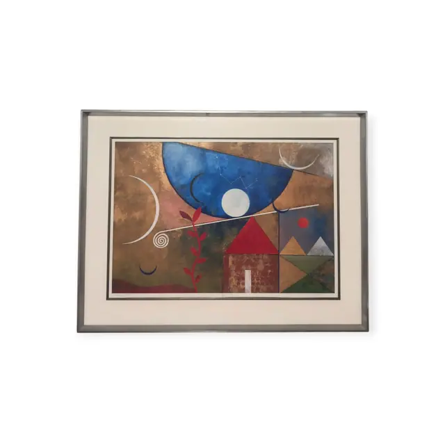
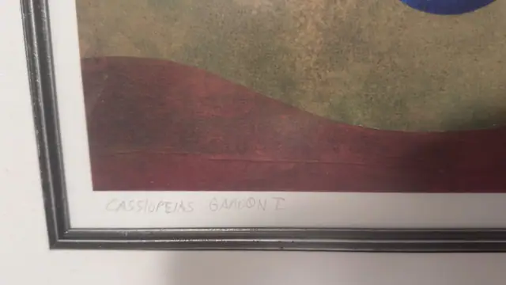
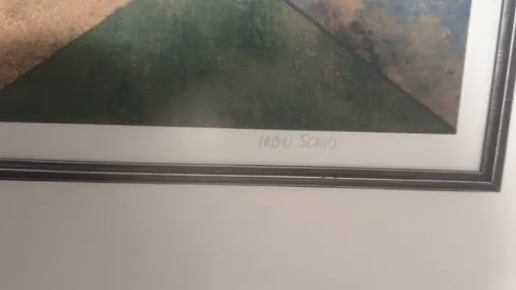
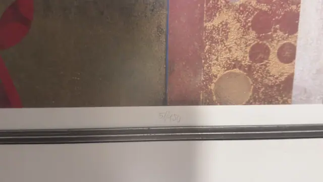
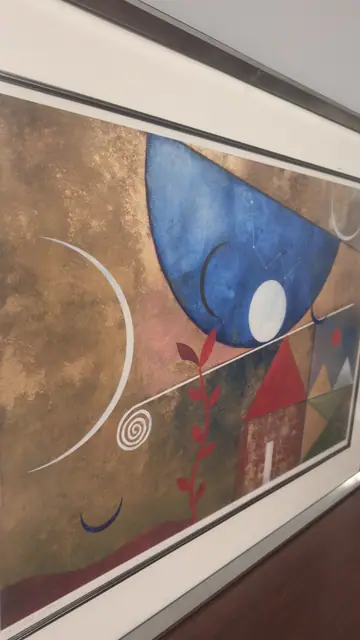
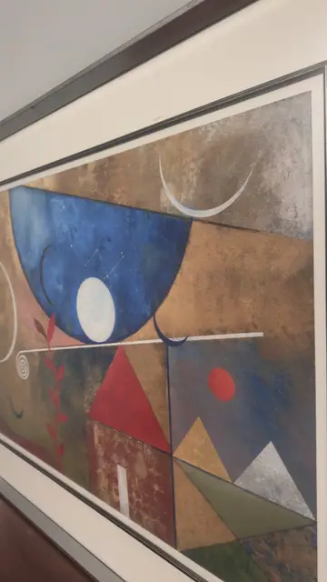

Paintings & Prints
Cassiopeias Gardon I, Signed Limited Edition Print, IRON SCHIO, Numbered Edition, Framed
IRON SCHIO · late 20th century
Price Upon Request






About the Item
IRON SCHIO. A large horizontal composition on a mottled gold and bronze ground. A deep blue half-disc filled with a faint constellation diagram dominates the upper half, carrying a white full moon at its centre, and slender white crescents and a spiral drift around it. Below, a house with a red gable and a lit doorway sits beside flat triangular mountains in sage green, silver and slate blue, with a small red sun and a stylised red-leafed plant rising through the middle. Colours are matt and chalky - antique gold, cobalt, oxblood red, olive and plum - and the sheet is presented under a deep white mat in a narrow pewter-silver frame. Medium: serigraph (screenprint) with metallic gold ground on paper. Signed lower right margin, in pencil, reading "IRON SCHIO". Edition: 51/450. Inscribed on the reverse or mount: CASSIOPEIAS GARDON I (pencil, lower left margin); 51/450 (pencil, lower centre margin); IRON SCHIO (pencil, lower right margin). Condition: No visible damage; mat and print appear clean, some reflection on the glass.
Details
- Creator:
- IRON SCHIO
- Creation Year:
- late 20th century
- Dimensions:
- Height: 39.25 in (99.7 cm)
Width: 51.25 in (130.18 cm)
outside of frame - Medium:
- serigraph (screenprint) with metallic gold ground on paper
- Edition:
- 51/450
- Period:
- 20Th
- Condition:
- Offered in the condition shown in the photographs.
- Reference Number:
- VO-129
- Documentation:
- no certificate photographed
- Gallery Location:
- CASSIOPEIAS GARDON I (pencil, lower left margin); 51/450 (pencil, lower centre margin); IRON SCHIO (pencil, lower right margin)